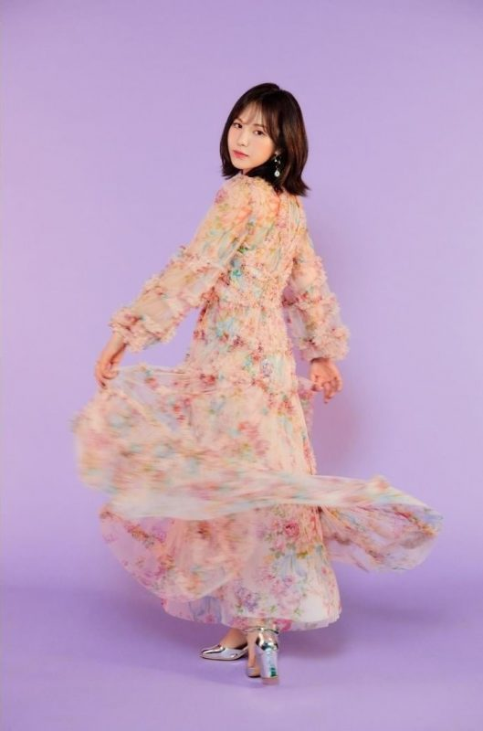
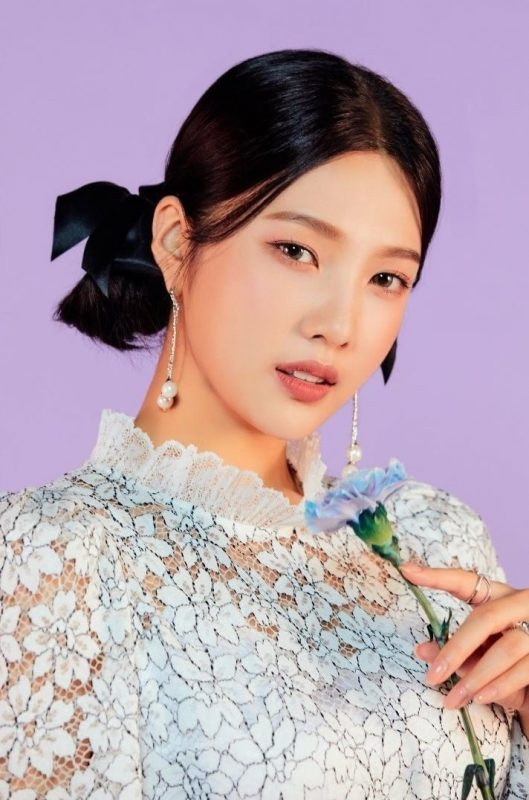
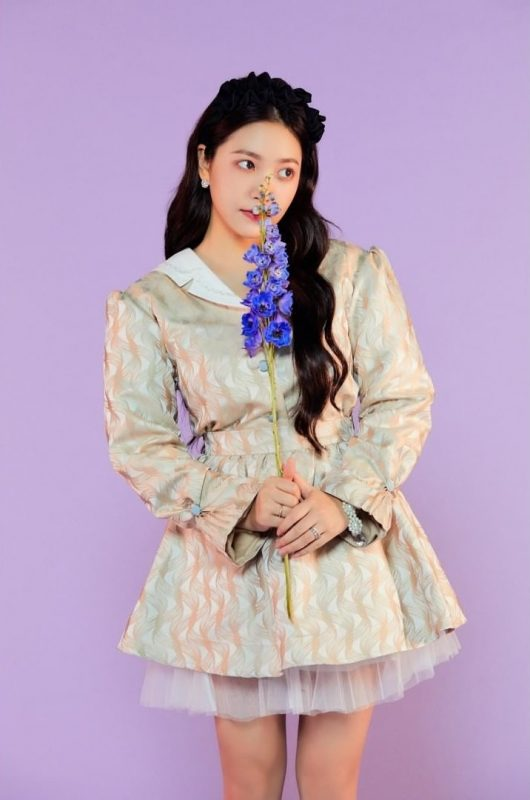

Red Velvet(레드벨벳) is a girl group that consists of 5 members: Irene, Wendy, Seulgi, Joy and Yeri. Red Velvet debuted on August 1, 2014, under SM Entertainment.
Birthname:Bae Juhyun (배주현) Birthdate: March 29, 1991 Height: 158 cm (5´2 in.)
Birthplace: Daegu, North Gyeongsan, South Korea Position: Leader, Main Rapper, Lead Dancer, Sub Vocalist, Visual, Center
Seulgi (진)
Birthname: Kang Seulgi (강슬기)
Birthdate: Feburary 10, 1994 Height: 161 cm (5´3 in.)
Birthplace: Ansan, Gyeonggi, South Korea Position: Lead Vocalist, Main Dancer
Wendy (웬디)

Birthname: Son Seungwan (손승완)
Birthdate: Feburary 21, 1994
Height: 159 cm (5´2 in.)
Birthplace: Seoul, Gyeonggi, South Korea Position: Main Vocalist
Joy (조이)

Birthname: Park Sooyoung (박수영)
Birthdate: September 13, 1996
Height: 167 cm (5´6 in.)
Birthplace: Jeju Island, South Korea Position: Lead Rapper, Sub Vocalist
Yeri (에리)

Birthname: Kim Yerim (김에림)
Birthdate: March 05, 1999
Height: 157 cm (5´1 in.)
Birthplace: Seoul, Gyeonggi, South Korea Position: Maknae, Lead Rapper, Sub Vocalist
Achievements
Red Velvet's first full-length album, The Red, debuted at #1 on Billboard's World Albums Chart and South Korea's Gaon Album Chart, and also appeared in Billboard's list of the "10 Best K-Pop Albums of 2015."
The music video for "Dumb Dumb" was included as the only non-English language entry in Rolling Stone's "10 Best Music Videos of 2015."
September 13, 2016, Red Velvet took their first music show win for Russian Roulette on The Show. The title track peaked at number two on the Gaon Digital Chart and Billboard's World Digital Songs chart, making it their highest rankings on both charts at the time.
Red Velvet released their fifth EP The Red Summer with the title track "Red Flavor" (빨간 맛), which again topped the Gaon Album Chart and the Billboard World Albums Chart. This was their third #1 release and set the record for most #1 albums on the chart by a K-pop girl group.
"Peek-a-Boo" peaked at #2 Billboard's World Album Chart which once again set the record for most number-ones on the chart by a K-pop girl group but also tied with most number-ones among all K-pop acts.